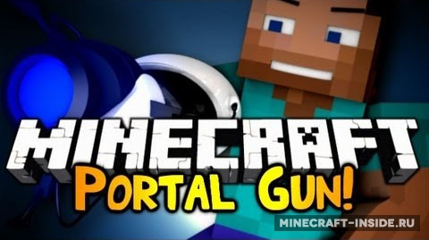
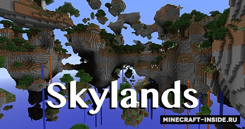
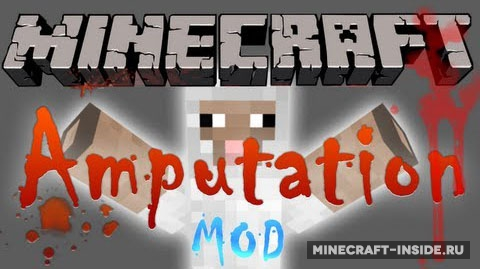
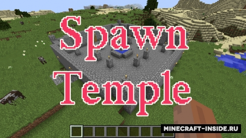
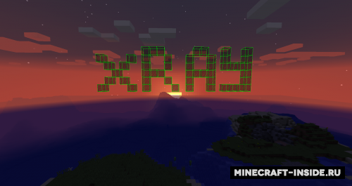
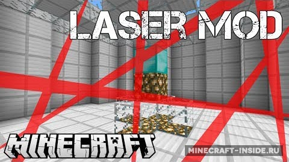
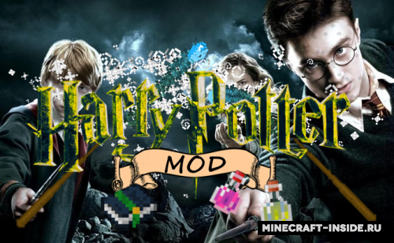

Установив это мод вы получите портальную пушку из игры Portal 2, с такой пушкой вы сможете с легкостью преодолевать любые препятствия, просто обходя их с помощью порталов.

С этим паком для OTG вы сможете создавать мир, в котором все биомы будут состоять из летающих в воздухе островов разного размера. Путешествовать в таком мире будет проблематично, поэтому не забудьте установить мод на крафт элитр.

Теперь при сражении со скелетом или зомби есть небольшой шанс отрубить ему руки или голову.

Теперь при создании мира в точке вашего спавна будет генерироваться массивная структура, которая обезопасит вас на начальном этапе игры.

С этим модом у вас появится рентгеновское зрение, с помощью которого можно без труда отыскать нужную руду. Для включения нажмите кнопку "X".

В игре появится интерфейс для создания лазерных уровней (F12), которые пригодятся вам при создании больших построек. Уровни полностью настраиваемые, вы сможете сменить их размер, цвет и направление.
